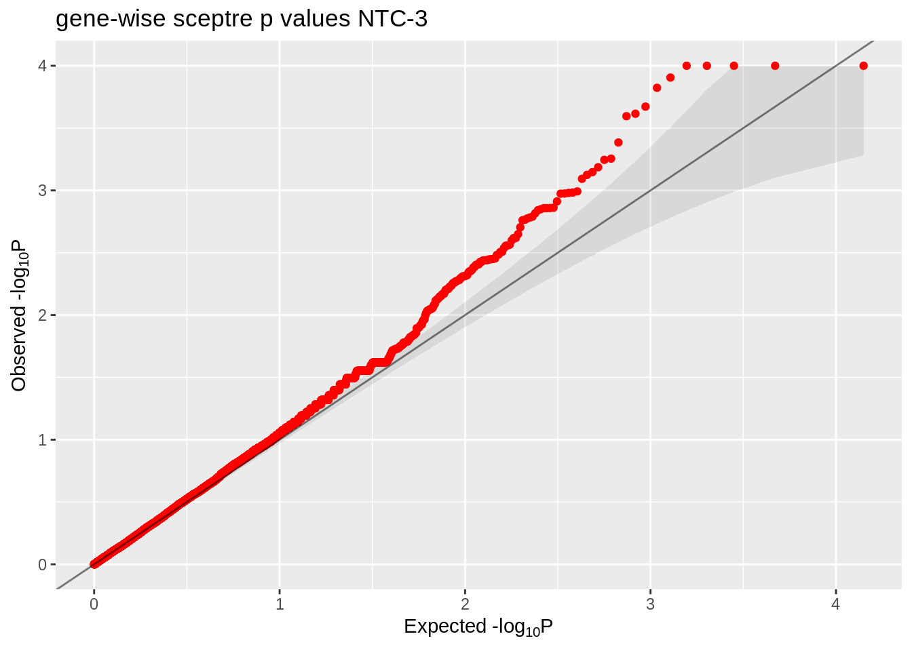
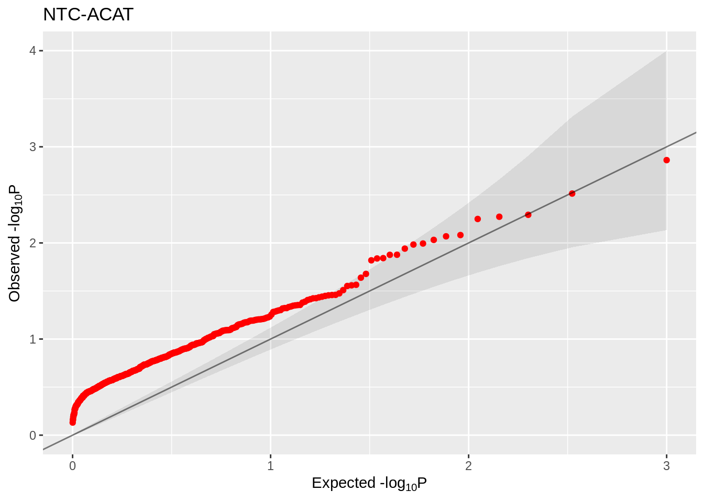
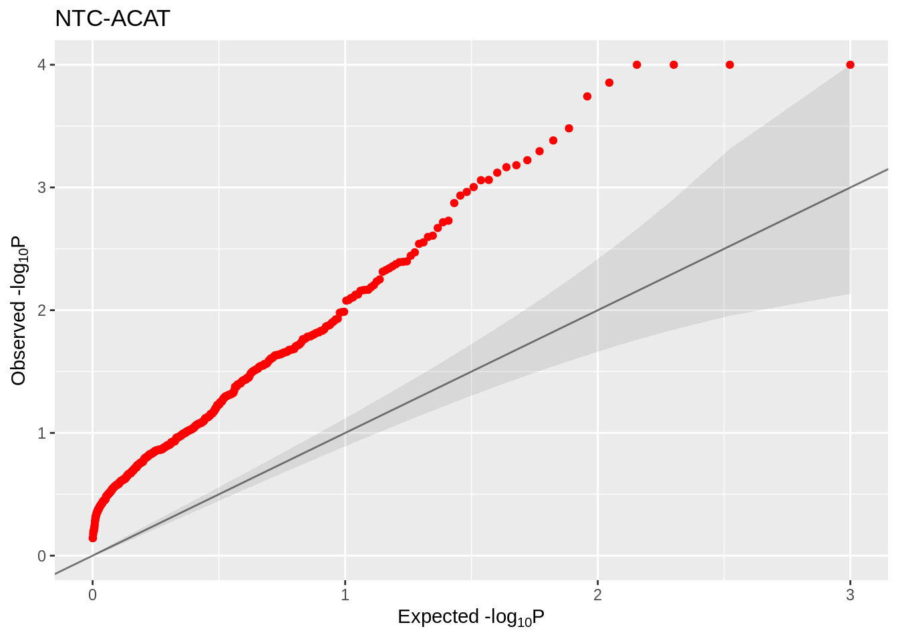
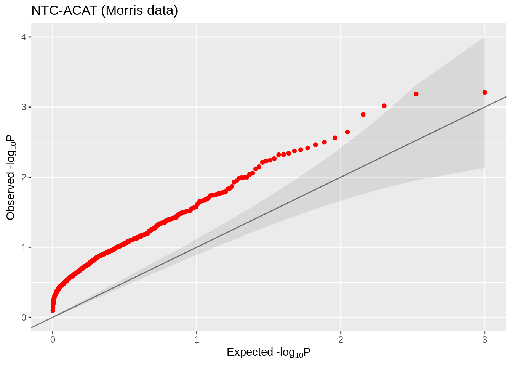

Research log
jliucx
2024-12-5
Last updated: 2025-04-20
Checks: 6 1
Knit directory: Getting_started/
This reproducible R Markdown analysis was created with workflowr (version 1.7.1). The Checks tab describes the reproducibility checks that were applied when the results were created. The Past versions tab lists the development history.
Great! Since the R Markdown file has been committed to the Git repository, you know the exact version of the code that produced these results.
Great job! The global environment was empty. Objects defined in the global environment can affect the analysis in your R Markdown file in unknown ways. For reproduciblity it’s best to always run the code in an empty environment.
The command set.seed(20240712) was run prior to running the code in the R Markdown file. Setting a seed ensures that any results that rely on randomness, e.g. subsampling or permutations, are reproducible.
Great job! Recording the operating system, R version, and package versions is critical for reproducibility.
Nice! There were no cached chunks for this analysis, so you can be confident that you successfully produced the results during this run.
Using absolute paths to the files within your workflowr project makes it difficult for you and others to run your code on a different machine. Change the absolute path(s) below to the suggested relative path(s) to make your code more reproducible.
| absolute | relative |
|---|---|
| /project/xuanyao/jiaming/Getting_started/data/Morris_adjusted | data/Morris_adjusted |
| /project/xuanyao/jiaming/Getting_started/output/Morris/sceptre/both_trans_author_filtered_cell_complete/ | output/Morris/sceptre/both_trans_author_filtered_cell_complete |
| /project/xuanyao/jiaming/Getting_started/data/Morris/program_data_hallmark/gene_module_index_matrix.rds | data/Morris/program_data_hallmark/gene_module_index_matrix.rds |
| /project/xuanyao/jiaming/Getting_started/data/Morris/program_data_hallmark/discovery_pairs_cis.rds | data/Morris/program_data_hallmark/discovery_pairs_cis.rds |
| /project/xuanyao/jiaming/Getting_started/output/Morris/sceptre/both_trans_author_filtered_cell_complete/results_run_discovery_analysis.rds | output/Morris/sceptre/both_trans_author_filtered_cell_complete/results_run_discovery_analysis.rds |
| /project/xuanyao/jiaming/Getting_started/output/Morris/sceptre/both_trans_author_filtered_cell_complete/results_run_calibration_check.rds | output/Morris/sceptre/both_trans_author_filtered_cell_complete/results_run_calibration_check.rds |
| /project/xuanyao/jiaming/Getting_started/data/Morris/program_data_hallmark/grna_target_data_frame_omit.rds | data/Morris/program_data_hallmark/grna_target_data_frame_omit.rds |
| /project/xuanyao/jiaming/Getting_started/output/Xie/sceptre/adj_crt_union_batch_threshold_4/results_run_discovery_analysis.rds | output/Xie/sceptre/adj_crt_union_batch_threshold_4/results_run_discovery_analysis.rds |
| /project/xuanyao/jiaming/Getting_started/data/Xie/program_data/gene_module_index_matrix.rds | data/Xie/program_data/gene_module_index_matrix.rds |
| /project/xuanyao/jiaming/Getting_started/data/Xie/program_data/gene_to_analyze_filtered.rds | data/Xie/program_data/gene_to_analyze_filtered.rds |
| /project/xuanyao/jiaming/Getting_started/data/Xie/program_data/discovery_pairs_cis.rds | data/Xie/program_data/discovery_pairs_cis.rds |
| /project/xuanyao/jiaming/Getting_started/output/Xie/sceptre/adj_crt_union_batch_threshold_4/results_run_calibration_check.rds | output/Xie/sceptre/adj_crt_union_batch_threshold_4/results_run_calibration_check.rds |
| /project/xuanyao/jiaming/Getting_started/output/Xie/sceptre/cNMF_threshold4/results_run_discovery_analysis.rds | output/Xie/sceptre/cNMF_threshold4/results_run_discovery_analysis.rds |
| /project/xuanyao/jiaming/Getting_started/data/Xie/program_data_cNMF/gene_module_index_matrix.rds | data/Xie/program_data_cNMF/gene_module_index_matrix.rds |
| /project/xuanyao/jiaming/Getting_started/data/Xie/program_data_cNMF/discovery_pairs_cis.rds | data/Xie/program_data_cNMF/discovery_pairs_cis.rds |
| /project/xuanyao/jiaming/Getting_started/data/Morris_adjusted/program_data/discovery_pairs_cis.rds | data/Morris_adjusted/program_data/discovery_pairs_cis.rds |
| /project/xuanyao/jiaming/Getting_started/output/Morris/remove_cis_match_grna/4_cov/50HALLMARK/resample_normal_test_statistics.csv | output/Morris/remove_cis_match_grna/4_cov/50HALLMARK/resample_normal_test_statistics.csv |
| /project/xuanyao/jiaming/Getting_started/output/Morris/sceptre_all_pairs/author_threshold_adjusted/results_run_discovery_analysis.rds | output/Morris/sceptre_all_pairs/author_threshold_adjusted/results_run_discovery_analysis.rds |
| /project/xuanyao/jiaming/Getting_started/output/Morris/sceptre_all_pairs/author_threshold_adjusted/results_run_calibration_check.rds | output/Morris/sceptre_all_pairs/author_threshold_adjusted/results_run_calibration_check.rds |
| /project/xuanyao/jiaming/Getting_started/output/Morris/system_comparison/author_threshold/50HALLMARK/resample_normal_test_statistics.csv | output/Morris/system_comparison/author_threshold/50HALLMARK/resample_normal_test_statistics.csv |
| /project/xuanyao/jiaming/Getting_started/output/Morris/sceptre_all_pairs/author_threshold_corrected_cov/results_run_discovery_analysis.rds | output/Morris/sceptre_all_pairs/author_threshold_corrected_cov/results_run_discovery_analysis.rds |
| /project/xuanyao/jiaming/Getting_started/output/Morris/sceptre_all_pairs/author_threshold_corrected_cov/results_run_calibration_check.rds | output/Morris/sceptre_all_pairs/author_threshold_corrected_cov/results_run_calibration_check.rds |
| /project/xuanyao/jiaming/Getting_started/output/Morris/system_comparison/em/50HALLMARK/resample_normal_test_statistics.csv | output/Morris/system_comparison/em/50HALLMARK/resample_normal_test_statistics.csv |
| /project/xuanyao/jiaming/Getting_started/output/Morris/sceptre_all_pairs/em_corrected_cov/results_run_discovery_analysis.rds | output/Morris/sceptre_all_pairs/em_corrected_cov/results_run_discovery_analysis.rds |
| /project/xuanyao/jiaming/Getting_started/output/Morris/sceptre_all_pairs/em_corrected_cov/results_run_calibration_check.rds | output/Morris/sceptre_all_pairs/em_corrected_cov/results_run_calibration_check.rds |
| /project/xuanyao/jiaming/Getting_started/output/Morris/system_comparison/cutoff4/50HALLMARK/resample_normal_test_statistics.csv | output/Morris/system_comparison/cutoff4/50HALLMARK/resample_normal_test_statistics.csv |
| /project/xuanyao/jiaming/Getting_started/output/Morris/sceptre_all_pairs/cutoff4_corrected_cov/results_run_discovery_analysis.rds | output/Morris/sceptre_all_pairs/cutoff4_corrected_cov/results_run_discovery_analysis.rds |
| /project/xuanyao/jiaming/Getting_started/output/Morris/sceptre_all_pairs/cutoff4_corrected_cov/results_run_calibration_check.rds | output/Morris/sceptre_all_pairs/cutoff4_corrected_cov/results_run_calibration_check.rds |
| /project/xuanyao/jiaming/Getting_started/data/Morris/program_data_nature_cNMF/gene_module_index_matrix.rds | data/Morris/program_data_nature_cNMF/gene_module_index_matrix.rds |
| /project/xuanyao/jiaming/Getting_started/output/Morris/remove_cis_match_grna/4_cov/cNMF/resample_normal_test_statistics.csv | output/Morris/remove_cis_match_grna/4_cov/cNMF/resample_normal_test_statistics.csv |
| /project/xuanyao/jiaming/Getting_started/output/Morris/system_comparison/author_threshold/cNMF/resample_normal_test_statistics.csv | output/Morris/system_comparison/author_threshold/cNMF/resample_normal_test_statistics.csv |
| /project/xuanyao/jiaming/Getting_started/output/Morris/system_comparison/em/cNMF/resample_normal_test_statistics.csv | output/Morris/system_comparison/em/cNMF/resample_normal_test_statistics.csv |
| /project/xuanyao/jiaming/Getting_started/output/Morris/system_comparison/cutoff4/cNMF/resample_normal_test_statistics.csv | output/Morris/system_comparison/cutoff4/cNMF/resample_normal_test_statistics.csv |
Great! You are using Git for version control. Tracking code development and connecting the code version to the results is critical for reproducibility.
The results in this page were generated with repository version 69430e8. See the Past versions tab to see a history of the changes made to the R Markdown and HTML files.
Note that you need to be careful to ensure that all relevant files for the analysis have been committed to Git prior to generating the results (you can use wflow_publish or wflow_git_commit). workflowr only checks the R Markdown file, but you know if there are other scripts or data files that it depends on. Below is the status of the Git repository when the results were generated:
Ignored files:
Ignored: .Rhistory
Ignored: .Rproj.user/
Ignored: analysis/run.sh
Ignored: analysis/run_R.sh
Untracked files:
Untracked: analysis/sceptre_singleton.R
Untracked: analysis/sceptre_singleton.Rmd
Untracked: analysis/sceptre_threshold.Rmd
Untracked: code/debug.Rmd
Untracked: code/draft.Rmd
Untracked: code/find_gene_set.Rmd
Untracked: code/fit_skew_normal.cpp
Untracked: code/functions_optimized.R
Untracked: code/general_data_optimized.R
Untracked: code/minp.R
Untracked: code/nature_data_edit.Rmd
Untracked: code/negative_control.Rmd
Untracked: code/newest.R
Untracked: code/parallel/
Untracked: code/plots_generator.Rmd
Untracked: code/rcc_err/
Untracked: code/rcc_jobs/
Untracked: code/rcc_out/
Untracked: code/remove_cis.R
Untracked: code/remove_cis_optimize.R
Untracked: code/run_R_caslake.sh
Untracked: code/sceptre/
Untracked: code/t_test.cpp
Untracked: code/utilizer/
Untracked: data/
Untracked: docs_destroyed/
Untracked: output/Morris/
Untracked: output/Xie/
Untracked: output/debug/
Untracked: output/nature/
Untracked: output/newest/thesis/
Unstaged changes:
Modified: .gitignore
Modified: analysis/TATES.Rmd
Modified: analysis/_site.yml
Deleted: analysis/create_grna_target_data_frame.Rmd
Modified: analysis/debug.Rmd
Modified: analysis/new_model.Rmd
Modified: analysis/qqplot.Rmd
Modified: analysis/sceptre.Rmd
Modified: analysis/sceptre_example.Rmd
Deleted: analysis/seurat_example.Rmd
Deleted: analysis/summary.Rmd
Deleted: analysis/try_Knit.Rmd
Deleted: analysis/try_rcc.Rmd
Modified: code/functions.R
Deleted: code/job-info.err
Deleted: code/job-info.out
Modified: code/plot.Rmd
Deleted: code/results.csv
Deleted: code/results_wilcox_pval.csv
Modified: code/run_R.sh
Modified: code/startover.R
Deleted: code/test_gene_module.R
Deleted: code/test_gene_module.Rmd
Deleted: code/try.R
Deleted: code/try.Rmd
Deleted: output/SNP62_SNP60_for_all_genes.csv
Deleted: output/both_trans/analysis_summary.txt
Deleted: output/both_trans/grna_assignment_matrix.rds
Deleted: output/both_trans/plot_assign_grnas.png
Deleted: output/both_trans/plot_grna_count_distributions.png
Deleted: output/both_trans/plot_run_calibration_check.png
Deleted: output/both_trans/plot_run_discovery_analysis.png
Deleted: output/both_trans/plot_run_power_check.png
Deleted: output/both_trans/plot_run_qc.png
Deleted: output/both_trans/results_run_calibration_check.rds
Deleted: output/both_trans/results_run_discovery_analysis.rds
Deleted: output/both_trans/results_run_power_check.rds
Deleted: output/both_trans_author_threshold/analysis_summary.txt
Deleted: output/both_trans_author_threshold/grna_assignment_matrix.rds
Deleted: output/both_trans_author_threshold/plot_assign_grnas.png
Deleted: output/both_trans_author_threshold/plot_grna_count_distributions.png
Deleted: output/both_trans_author_threshold/plot_run_calibration_check.png
Deleted: output/both_trans_author_threshold/plot_run_discovery_analysis.png
Deleted: output/both_trans_author_threshold/plot_run_power_check.png
Deleted: output/both_trans_author_threshold/plot_run_qc.png
Deleted: output/both_trans_author_threshold/results_run_calibration_check.rds
Deleted: output/both_trans_author_threshold/results_run_discovery_analysis.rds
Deleted: output/both_trans_author_threshold/results_run_power_check.rds
Deleted: output/both_trans_author_threshold_0.05/analysis_summary.txt
Deleted: output/both_trans_author_threshold_0.05/grna_assignment_matrix.rds
Deleted: output/both_trans_author_threshold_0.05/plot_assign_grnas.png
Deleted: output/both_trans_author_threshold_0.05/plot_grna_count_distributions.png
Deleted: output/both_trans_author_threshold_0.05/plot_run_calibration_check.png
Deleted: output/both_trans_author_threshold_0.05/plot_run_discovery_analysis.png
Deleted: output/both_trans_author_threshold_0.05/plot_run_power_check.png
Deleted: output/both_trans_author_threshold_0.05/plot_run_qc.png
Deleted: output/both_trans_author_threshold_0.05/results_run_calibration_check.rds
Deleted: output/both_trans_author_threshold_0.05/results_run_discovery_analysis.rds
Deleted: output/both_trans_author_threshold_0.05/results_run_power_check.rds
Deleted: output/both_trans_author_threshold_0.05_2/analysis_summary.txt
Deleted: output/both_trans_author_threshold_0.05_2/grna_assignment_matrix.rds
Deleted: output/both_trans_author_threshold_0.05_2/plot_assign_grnas.png
Deleted: output/both_trans_author_threshold_0.05_2/plot_grna_count_distributions.png
Deleted: output/both_trans_author_threshold_0.05_2/plot_run_calibration_check.png
Deleted: output/both_trans_author_threshold_0.05_2/plot_run_discovery_analysis.png
Deleted: output/both_trans_author_threshold_0.05_2/plot_run_power_check.png
Deleted: output/both_trans_author_threshold_0.05_2/plot_run_qc.png
Deleted: output/both_trans_author_threshold_0.05_2/results_run_calibration_check.rds
Deleted: output/both_trans_author_threshold_0.05_2/results_run_discovery_analysis.rds
Deleted: output/both_trans_author_threshold_0.05_2/results_run_power_check.rds
Deleted: output/calibration_power_include_trans_pval_wilcoxon_2000_use_approximation.csv
Deleted: output/calibration_power_include_trans_pval_wilcoxon_2000_use_approximation_left.csv
Deleted: output/calibration_power_include_trans_t_2000_use_approximation_log.csv
Deleted: output/calibration_power_include_trans_t_2000_use_approximation_rank.csv
Deleted: output/calibration_power_include_trans_t_2000_use_approximation_rank_normalized.csv
Deleted: output/calibration_power_include_trans_t_2000_use_approximation_twoside.csv
Deleted: output/calibration_power_t_10000_no_approximation.csv
Deleted: output/calibration_power_t_10000_no_approximation_2.csv
Deleted: output/calibration_power_t_2000_use_approximation.csv
Deleted: output/calibration_power_t_2000_use_approximation_2.csv
Deleted: output/calibration_wilcoxon_10000_no_approximation.csv
Deleted: output/calibration_wilcoxon_10000_no_approximation_normalized.csv
Deleted: output/newest/try/gene_wise_p.csv
Deleted: output/newest/try/minp.csv
Deleted: output/newest/try/our_method.csv
Deleted: output/power_include_trans_t_2000_use_approximation.csv
Deleted: output/result.csv
Deleted: output/result_calibration.csv
Deleted: output/result_calibration_2.csv
Deleted: output/result_calibration_use_approximation_10000.csv
Deleted: output/result_calibration_use_approximation_2000.csv
Deleted: output/result_calibration_use_approximation_5000.csv
Deleted: output/result_calibration_use_rank.csv
Deleted: output/result_calibration_use_rank_parallel.csv
Deleted: output/result_remove_na_gene.csv
Deleted: output/sceptre_outputs/grna_assignment_matrix.rds
Deleted: output/sceptre_outputs/plot_assign_grnas.png
Deleted: output/sceptre_outputs/plot_grna_count_distributions.png
Deleted: output/sceptre_outputs/plot_run_calibration_check.png
Deleted: output/sceptre_outputs/plot_run_discovery_analysis.png
Deleted: output/sceptre_outputs/plot_run_power_check.png
Deleted: output/sceptre_outputs/plot_run_qc.png
Deleted: output/sceptre_outputs/results_run_calibration_check.rds
Deleted: output/sceptre_outputs/results_run_discovery_analysis.rds
Deleted: output/sceptre_outputs/results_run_power_check.rds
Deleted: output/sceptre_outputs/trans_mixture.txt
Deleted: output/sceptre_outputs_cis/cis_mixture.txt
Deleted: output/sceptre_outputs_cis/grna_assignment_matrix.rds
Deleted: output/sceptre_outputs_cis/plot_assign_grnas.png
Deleted: output/sceptre_outputs_cis/plot_grna_count_distributions.png
Deleted: output/sceptre_outputs_cis/plot_run_calibration_check.png
Deleted: output/sceptre_outputs_cis/plot_run_discovery_analysis.png
Deleted: output/sceptre_outputs_cis/plot_run_power_check.png
Deleted: output/sceptre_outputs_cis/plot_run_qc.png
Deleted: output/sceptre_outputs_cis/results_run_calibration_check.rds
Deleted: output/sceptre_outputs_cis/results_run_discovery_analysis.rds
Deleted: output/sceptre_outputs_cis/results_run_power_check.rds
Deleted: output/sceptre_outputs_cis_singleton/analysis_summary.txt
Deleted: output/sceptre_outputs_cis_singleton/grna_assignment_matrix.rds
Deleted: output/sceptre_outputs_cis_singleton/plot_assign_grnas.png
Deleted: output/sceptre_outputs_cis_singleton/plot_grna_count_distributions.png
Deleted: output/sceptre_outputs_cis_singleton/plot_run_calibration_check.png
Deleted: output/sceptre_outputs_cis_singleton/plot_run_discovery_analysis.png
Deleted: output/sceptre_outputs_cis_singleton/plot_run_power_check.png
Deleted: output/sceptre_outputs_cis_singleton/plot_run_qc.png
Deleted: output/sceptre_outputs_cis_singleton/results_run_calibration_check.rds
Deleted: output/sceptre_outputs_cis_singleton/results_run_discovery_analysis.rds
Deleted: output/sceptre_outputs_cis_singleton/results_run_power_check.rds
Deleted: output/sceptre_outputs_cis_threshold/cis_threshold.txt
Deleted: output/sceptre_outputs_cis_threshold/grna_assignment_matrix.rds
Deleted: output/sceptre_outputs_cis_threshold/plot_assign_grnas.png
Deleted: output/sceptre_outputs_cis_threshold/plot_grna_count_distributions.png
Deleted: output/sceptre_outputs_cis_threshold/plot_run_calibration_check_author_threshold.png
Deleted: output/sceptre_outputs_cis_threshold/plot_run_discovery_analysis.png
Deleted: output/sceptre_outputs_cis_threshold/plot_run_power_check.png
Deleted: output/sceptre_outputs_cis_threshold/plot_run_qc.png
Deleted: output/sceptre_outputs_cis_threshold/results_run_calibration_check.rds
Deleted: output/sceptre_outputs_cis_threshold/results_run_discovery_analysis.rds
Deleted: output/sceptre_outputs_cis_threshold/results_run_power_check.rds
Deleted: output/sceptre_outputs_cis_threshold5/calibration_cis_threshold5.png
Deleted: output/sceptre_outputs_cis_threshold5/cis_threshold5.txt
Deleted: output/sceptre_outputs_cis_threshold5/grna_assignment_matrix.rds
Deleted: output/sceptre_outputs_cis_threshold5/plot_assign_grnas.png
Deleted: output/sceptre_outputs_cis_threshold5/plot_grna_count_distributions.png
Deleted: output/sceptre_outputs_cis_threshold5/plot_run_discovery_analysis.png
Deleted: output/sceptre_outputs_cis_threshold5/plot_run_power_check.png
Deleted: output/sceptre_outputs_cis_threshold5/plot_run_qc.png
Deleted: output/sceptre_outputs_cis_threshold5/results_run_calibration_check.rds
Deleted: output/sceptre_outputs_cis_threshold5/results_run_discovery_analysis.rds
Deleted: output/sceptre_outputs_cis_threshold5/results_run_power_check.rds
Deleted: output/sceptre_outputs_trans_omit_NTC3_12/grna_assignment_matrix.rds
Deleted: output/sceptre_outputs_trans_omit_NTC3_12/plot_assign_grnas.png
Deleted: output/sceptre_outputs_trans_omit_NTC3_12/plot_grna_count_distributions.png
Deleted: output/sceptre_outputs_trans_omit_NTC3_12/plot_run_discovery_analysis.png
Deleted: output/sceptre_outputs_trans_omit_NTC3_12/plot_run_power_check.png
Deleted: output/sceptre_outputs_trans_omit_NTC3_12/plot_run_qc.png
Deleted: output/sceptre_outputs_trans_omit_NTC3_12/results_run_calibration_check.rds
Deleted: output/sceptre_outputs_trans_omit_NTC3_12/results_run_discovery_analysis.rds
Deleted: output/sceptre_outputs_trans_omit_NTC3_12/results_run_power_check.rds
Deleted: output/sceptre_outputs_trans_omit_NTC3_12/trans_mixture_omit.png
Deleted: output/sceptre_outputs_trans_omit_NTC3_12/trans_mixture_omit.txt
Deleted: output/sceptre_outputs_trans_threshold/grna_assignment_matrix.rds
Deleted: output/sceptre_outputs_trans_threshold/plot_assign_grnas.png
Deleted: output/sceptre_outputs_trans_threshold/plot_grna_count_distributions.png
Deleted: output/sceptre_outputs_trans_threshold/plot_run_discovery_analysis.png
Deleted: output/sceptre_outputs_trans_threshold/plot_run_power_check.png
Deleted: output/sceptre_outputs_trans_threshold/plot_run_qc.png
Deleted: output/sceptre_outputs_trans_threshold/results_run_calibration_check.rds
Deleted: output/sceptre_outputs_trans_threshold/results_run_discovery_analysis.rds
Deleted: output/sceptre_outputs_trans_threshold/results_run_power_check.rds
Deleted: output/sceptre_outputs_trans_threshold/tr_threshold.png
Deleted: output/sceptre_outputs_trans_threshold/tr_threshold.txt
Deleted: output/sceptre_outputs_trans_threshold_omit_NTC3_12/calibration_trans_threshold_omit.png
Deleted: output/sceptre_outputs_trans_threshold_omit_NTC3_12/grna_assignment_matrix.rds
Deleted: output/sceptre_outputs_trans_threshold_omit_NTC3_12/plot_assign_grnas.png
Deleted: output/sceptre_outputs_trans_threshold_omit_NTC3_12/plot_grna_count_distributions.png
Deleted: output/sceptre_outputs_trans_threshold_omit_NTC3_12/plot_run_discovery_analysis.png
Deleted: output/sceptre_outputs_trans_threshold_omit_NTC3_12/plot_run_power_check.png
Deleted: output/sceptre_outputs_trans_threshold_omit_NTC3_12/plot_run_qc.png
Deleted: output/sceptre_outputs_trans_threshold_omit_NTC3_12/results_run_calibration_check.rds
Deleted: output/sceptre_outputs_trans_threshold_omit_NTC3_12/results_run_discovery_analysis.rds
Deleted: output/sceptre_outputs_trans_threshold_omit_NTC3_12/results_run_power_check.rds
Deleted: output/sceptre_outputs_trans_threshold_omit_NTC3_12/trans_threshold_omit.txt
Modified: output/startover/test/gene_wise_p.csv
Modified: output/startover/test/minp.csv
Modified: output/startover/test/our_method.csv
Deleted: output/t_test_on_whole_dataset_author_threshold.csv
Deleted: output/t_test_on_whole_dataset_gene_wise.csv
Deleted: output/t_test_on_whole_reduced_dataset.csv
Deleted: output/t_test_on_whole_reduced_dataset_normalized.csv
Deleted: output/t_test_on_whole_reduced_dataset_normalized_threshold.csv
Deleted: output/test_rank_wilcox.csv
Deleted: output/trans_singleton_threshold5/analysis_summary.txt
Deleted: output/trans_singleton_threshold5/grna_assignment_matrix.rds
Deleted: output/trans_singleton_threshold5/plot_assign_grnas.png
Deleted: output/trans_singleton_threshold5/plot_grna_count_distributions.png
Deleted: output/trans_singleton_threshold5/plot_run_calibration_check.png
Deleted: output/trans_singleton_threshold5/plot_run_discovery_analysis.png
Deleted: output/trans_singleton_threshold5/plot_run_power_check.png
Deleted: output/trans_singleton_threshold5/plot_run_qc.png
Deleted: output/trans_singleton_threshold5/results_run_calibration_check.rds
Deleted: output/trans_singleton_threshold5/results_run_discovery_analysis.rds
Deleted: output/trans_singleton_threshold5/results_run_power_check.rds
Deleted: output/trans_singleton_threshold_author_omit/analysis_summary.txt
Deleted: output/trans_singleton_threshold_author_omit/grna_assignment_matrix.rds
Deleted: output/trans_singleton_threshold_author_omit/plot_assign_grnas.png
Deleted: output/trans_singleton_threshold_author_omit/plot_grna_count_distributions.png
Deleted: output/trans_singleton_threshold_author_omit/plot_run_calibration_check.png
Deleted: output/trans_singleton_threshold_author_omit/plot_run_discovery_analysis.png
Deleted: output/trans_singleton_threshold_author_omit/plot_run_power_check.png
Deleted: output/trans_singleton_threshold_author_omit/plot_run_qc.png
Deleted: output/trans_singleton_threshold_author_omit/results_run_calibration_check.rds
Deleted: output/trans_singleton_threshold_author_omit/results_run_discovery_analysis.rds
Deleted: output/trans_singleton_threshold_author_omit/results_run_power_check.rds
Deleted: output/try_sceptre_skew_fit_normalized_threshold.csv
Deleted: output/try_sceptre_skew_fit_normalized_threshold_filter_cell.csv
Note that any generated files, e.g. HTML, png, CSS, etc., are not included in this status report because it is ok for generated content to have uncommitted changes.
These are the previous versions of the repository in which changes were made to the R Markdown (analysis/research_log.Rmd) and HTML (docs/research_log.html) files. If you’ve configured a remote Git repository (see ?wflow_git_remote), click on the hyperlinks in the table below to view the files as they were in that past version.
| File | Version | Author | Date | Message |
|---|---|---|---|---|
| Rmd | 69430e8 | jliucx | 2025-04-21 | upload Feb log |
| html | 82a4b2e | jliucx | 2025-04-20 | Build site. |
| Rmd | bf0ea09 | jliucx | 2025-04-20 | upload Feb log |
| html | 53da233 | jliucx | 2025-04-15 | Build site. |
| Rmd | c4f4c76 | jliucx | 2025-04-15 | complete |
| html | ca1ecbf | jliucx | 2025-04-15 | Build site. |
| html | ea321fe | jliucx | 2025-04-15 | Build site. |
| Rmd | d83e26e | jliucx | 2025-04-15 | complete |
| html | 6a5bee8 | jliucx | 2025-04-15 | Build site. |
| Rmd | 20338c1 | jliucx | 2025-04-15 | complete |
| html | 0cffe59 | jliucx | 2025-04-15 | Build site. |
| Rmd | d1688d1 | jliucx | 2025-04-15 | upload research log |
| html | a541f87 | jliucx | 2025-04-15 | Build site. |
| Rmd | 8b31d75 | jliucx | 2025-04-15 | upload research log |
| html | 00bfdd0 | jliucx | 2025-04-15 | Build site. |
| Rmd | 8778e71 | jliucx | 2025-04-15 | upload research log |
1 Outline

| Version | Author | Date |
|---|---|---|
| bf0ea09 | jliucx | 2025-04-20 |
Our Method (Wilcoxon test) uniformly observes more discoveries than sceptre + Cauchy in any one of the gRNA assignment (Author threshold; EM; Cutoff 4)
Only author threshold, and cell covariate ignoring those gRNA for which UMI are below threshold gives a good NTC calibration. All other configurations have inflation.
I havn’t tested EM/cutoff 4, covariates ignoring those gRNA for which UMI are below threshold yet. It needs to be discussed whether this adjustment makes sense.
2 Feb 2025 - Morris - 50 Hallmark gene sets: A wrong labeling of gRNA assignments:
For the presentation in Feb, there is a one-row-mismatch of the gRNA assignments from the raw dataset (SNP1-1 is actually SNP1-2, SNP1-2 is actually SNP 2-1 .., etc). Both Sceptre and our results use the wrong but unified labeling. The folder containing this wrong information is
"/project/xuanyao/jiaming/Getting_started/data/Morris_adjusted"This will only be used as a horizontal comparison of Sceptre+ACAT and our method.
2.1 Parameter setting
Raw data folder:
"/project/xuanyao/jiaming/Getting_started/output/Morris/sceptre/both_trans_author_filtered_cell_complete/"
"/project/xuanyao/jiaming/Getting_started/output/Morris/sceptre/both_trans_author_filtered_cell_complete/"
MinP<- read.csv("output/Morris/remove_cis/remove_cis_10Mb/our_method.csv")
max_stat <- read.csv("output/Morris/remove_cis/remove_cis_10Mb_approximation_3000/max_normalized_statistics.csv")gRNA assignment : Author threshold
Test : Ranked t
Skew curve : Skewed normal (for Max Stat)/ Null (for MinP)
2.2 Results
library(eulerr)
significant_levels <- c(0.01, 0.05, 0.1, 0.25)
# significant_levels <- 0.01
plot_list <- list()
# Loop through significant levels and display plots
for (significant_level in significant_levels) {
# Filter significant IDs for each method
significant_ids_gene_wise_p <- module_results_sceptre$identifier[
module_results_sceptre$bh_pval < significant_level]
significant_ids_ours <- our_method_long$identifier[
our_method_long$bh_pval < significant_level]
significant_ids_max_stat <- max_stat_long$identifier[
max_stat_long$bh_pval < significant_level]
# Prepare the sets
venn_data <- list(
`Sceptre+Cauchy` = significant_ids_gene_wise_p,
# `t+Cauchy` = significant_ids_gene_wise_p_t,
# `max stat` = significant_ids_minp,
`MinP` = significant_ids_ours,
`max stat` = significant_ids_max_stat
# `Sceptre+Bonfer` = significant_ids_gene_wise_p_bonfer,
# `t+Bonfer`=significant_ids_gene_wise_p_t_bonfer
)
# Generate the Euler diagram and display it
euler_plot <- plot(
euler(venn_data),
fills = list(fill = c("red", "green", "yellow", "orange"), alpha = 0.5),
edges = TRUE,
quantities = TRUE,
labels = list(font = 2, cex = 1.2, pos = 3), # 调整字体和位置
main = paste("Significant level", significant_level)
)
plot_list[[length(plot_list) + 1]] <- euler_plot
}
grid.arrange(grobs = plot_list, ncol = 2)
par(mfrow = c(1, 1))Here we compare two choices: MinP and Max stat
MinP: use the minimum P value as test statistics, and instead of using skew curve, we used 10000 resample Max stat: use the maximum of standardized z values, and fit skew normal curve, we used 3000 resample

2.3 A wrong labeling of gRNA

| Version | Author | Date |
|---|---|---|
| bf0ea09 | jliucx | 2025-04-20 |
In April, when I tried other grna assignment methods, I observed a significant difference between the previous result (v1) and author threshold(v2), EM(v3), cutoff4(v4) To see whether the wrong label is the main cause of disparity, I manually correct the labeling of v1. 
| Version | Author | Date |
|---|---|---|
| bf0ea09 | jliucx | 2025-04-20 |
3 Mar 2025 - Xie - 50 Hallmark gene sets:
Apart from t test, we also implemented wilcoxon test in a computational efficient manner: We will compare t, ranked t, wilcoxon test in this section.
3.1 Parameter setting
Raw data folder:
"/project/xuanyao/jiaming/Getting_started/output/Xie/sceptre/adj_crt_union_batch_threshold_4/results_run_discovery_analysis.rds"
"output/Xie/our_method/remove_cis_normal_not_rank_pooled_batch/resample_normal_test_statistics.csv"
"output/Xie/our_method/50HALLMARK/log_covariate/resample_normal_test_statistics.csv"gRNA assignment : Cutoff4
Test : Wilcoxon
Skew curve : Skewed normal
3.2 Results
library(eulerr)
library(gridExtra)
# Define significance levels
significant_levels <- c(0.05, 0.1, 0.15,0.2)
plot_list <- list()
# Loop through significant levels and compare methods
for (significant_level in significant_levels) {
sig_resample_normal_rank <- resample_normal_rank_long$identifier[resample_normal_rank_long$bh_pval < significant_level]
sig_resample_normal_not_rank <- resample_normal_not_rank_long$identifier[resample_normal_not_rank_long$bh_pval < significant_level]
sig_resample_normal_wilcoxon <- resample_normal_wilcoxon_long$identifier[resample_normal_wilcoxon_long$bh_pval < significant_level]
sig_sceptre <- module_results_t$identifier[module_results_t$bh_pval < significant_level]
venn_data <- list(
# "t not rank" = sig_resample_normal_not_rank,
"sceptre_resample" = sig_sceptre,
"Wilcoxon" =sig_resample_normal_wilcoxon
)
# Generate the Euler diagram and display it
euler_plot <- plot(euler(venn_data),
fills = list(fill = c("red", "yellow","orange"), alpha = 0.5),
edges = TRUE, quantities = TRUE,
main = paste("Significance Level", significant_level))
# Store the plot
plot_list[[length(plot_list) + 1]] <- euler_plot
}
# Arrange the plots in a grid
grid.arrange(grobs = plot_list, ncol = 2)
3.3 Negative control
There are in total 4 NTC guides, and only 2 of them passed the qc: NTC-1 and NTC-3 Based on our results, the p values of NTC-1 seems to be inflated, however, the NTC-3 seems to be reasonable. Based on sceptre gene wise results, both NTC-1 and NTC-3 are inflated.
gg_qqplot(as.vector(as.matrix(resample_normal_wilcoxon[519,])),title="Gene module p value NTC-1 (our method)")
gg_qqplot(as.vector(as.matrix(resample_normal_wilcoxon[521,])),title="Gene module p value NTC-3 (our method)")
subset_values <- results_run_calibration_check$p_value[
results_run_calibration_check$grna_target == "sgRNA_NTC_1" &
results_run_calibration_check$pass_qc == TRUE
]
gg_qqplot(subset_values,title="gene-wise sceptre p values NTC-1")
subset_values <- results_run_calibration_check$p_value[
results_run_calibration_check$grna_target == "sgRNA_NTC_3" &
results_run_calibration_check$pass_qc == TRUE
]
gg_qqplot(subset_values,title="gene-wise sceptre p values NTC-3")
| Version | Author | Date |
|---|---|---|
| 82a4b2e | jliucx | 2025-04-20 |
plot(as.vector(as.matrix(resample_normal_wilcoxon)),as.vector(as.matrix(resample_normal_wilcoxon_v0)), main="log cov vs count cov", xlab="log count", ylab="count")
3.4 Comparison of wilcoxon test, ranked t test and t test
# Convert to vectors
wilcoxon_vec <- as.vector(as.matrix(resample_normal_wilcoxon))
rankt_vec <- as.vector(as.matrix(resample_normal_rank))
t_vec <- as.vector(as.matrix(resample_normal_not_rank))
# Calculate correlation
corr_val <- cor(wilcoxon_vec, t_vec, use = "complete.obs")
corr_val_2 <- cor(wilcoxon_vec, rankt_vec, use = "complete.obs")
corr_val_3 <- cor(t_vec, rankt_vec, use = "complete.obs")
plot(wilcoxon_vec, rankt_vec,
main = "Wilcoxon vs ranked t",
xlab = "wilcoxon",
ylab = "ranked t")
# Plot
text(x = 0.55, y = 0.55,
labels = paste0("cor = ", round(corr_val_2, 4)),
col = "red", cex = 1.2)
plot(wilcoxon_vec, t_vec,
main = "Wilcoxon vs t",
xlab = "wilcoxon",
ylab = "t")
# Add correlation text in red
text(x = 0.55, y = 0.35,
labels = paste0("cor = ", round(corr_val, 4)),
col = "red", cex = 1.2)
plot(t_vec, rankt_vec,
main = "t vs ranked t",
xlab = "t",
ylab = "ranked t")
# Plot
text(x = 0.55, y = 0.55,
labels = paste0("cor = ", round(corr_val_3, 4)),
col = "red", cex = 1.2)
| Version | Author | Date |
|---|---|---|
| 82a4b2e | jliucx | 2025-04-20 |
The wilcoxon test, in principle, is equivalent to ranked t test. However, in implementation, the way I rank the expression data is different (specifically, dealing with ties). For wilcoxon, I use standard wilcoxon ranking i.e. when ties occur, take the mean of the rank. However in ranked t I implemented, I take the minimum of the rank. But still they are highly correlated.
4 April 2025 - Xie - 300 cNMF sets:
4.1 Parameter setting
Raw data folder:
"/project/xuanyao/jiaming/Getting_started/output/Xie/sceptre/cNMF_threshold4/results_run_discovery_analysis.rds"
"output/Xie/our_method/cNMF/log_covariate_remove_cis/resample_normal_test_statistics.csv"
gRNA assignment : Cutoff4
Test : Wilcoxon
Skew curve : Skewed normal
4.2 Results
resample_normal_wilcoxon <- read.csv("output/Xie/our_method/cNMF/log_covariate_remove_cis/resample_normal_test_statistics.csv", row.names = 1, header = TRUE, check.names = FALSE)
gene_module_index_matrix_essential <- readRDS("/project/xuanyao/jiaming/Getting_started/data/Xie/program_data_cNMF/gene_module_index_matrix.rds")
gene_names <- rownames(gene_module_index_matrix_essential)
sceptre <- readRDS("/project/xuanyao/jiaming/Getting_started/output/Xie/sceptre/cNMF_threshold4/results_run_discovery_analysis.rds")[,c(1,2,6)]
sceptre <- sceptre[!is.na(sceptre$p_value), ]
sceptre$p_value[sceptre$p_value == 1] <- 1 - 1e-6
sceptre_wide <- sceptre %>%
pivot_wider(names_from = response_id, values_from = p_value) %>%
as.data.frame()
# Set the row names to be the grna_id and remove the grna_id column
rownames(sceptre_wide) <- sceptre_wide$grna_target
sceptre_wide <- sceptre_wide[, -1]
sceptre_wide <- sceptre_wide[rownames(resample_normal_wilcoxon)[rownames(resample_normal_wilcoxon) %in% rownames(sceptre_wide)], ]library(eulerr)
library(gridExtra)
# Define significance levels
significant_levels <- c(0.05, 0.1, 0.15,0.2)
plot_list <- list()
# Loop through significant levels and compare methods
for (significant_level in significant_levels) {
sig_resample_normal_wilcoxon <- resample_normal_wilcoxon_long$identifier[resample_normal_wilcoxon_long$bh_pval < significant_level]
sig_sceptre <- module_results_t$identifier[module_results_t$bh_pval < significant_level]
venn_data <- list(
# "t not rank" = sig_resample_normal_not_rank,
"sceptre_resample" = sig_sceptre,
"Wilcoxon" =sig_resample_normal_wilcoxon
)
# Generate the Euler diagram and display it
euler_plot <- plot(euler(venn_data),
fills = list(fill = c("red", "yellow","orange"), alpha = 0.5),
edges = TRUE, quantities = TRUE,
main = paste("Significance Level", significant_level))
# Store the plot
plot_list[[length(plot_list) + 1]] <- euler_plot
}
# Arrange the plots in a grid
grid.arrange(grobs = plot_list, ncol = 2)
gg_qqplot(as.vector(as.matrix(resample_normal_wilcoxon[519,])),title="NTC-1")
gg_qqplot(as.vector(as.matrix(resample_normal_wilcoxon[521,])),title="NTC-3")
| Version | Author | Date |
|---|---|---|
| 82a4b2e | jliucx | 2025-04-20 |
5 Apr 2025 - Morris-50 Hallmark gene sets: Different grna assignment strategies affects the Morris results.
We compare 3 configurations: EM Algorithm; cutoff=4; author threshold.
For author threshold, we analyze two options:
- The total UMI & gRNA counts in the cell (including those gRNA where UMI are below threshold)
- The UMI & gRNA counts that are above threshold only
For example, in the raw count matrix, gRNA 1 has 5 reads in a cell (above threshold); gRNA 2 has 2 reads in a cell (below threshold), then the first strategy consider number of gRNA as 2, total UMI as 7, whereas the second strategy consider gRNA as 1, total UMI as 5. In this dataset, I found that the first strategy is not inflated, but the second strategy does introduce inflation.
5.1 Sceptre NTC Analysis: genewise p values
For sceptre, we found that the inflation exists in all cases, except author threshold where we only consider gRNA UMI count that are above threshold provided by the author:
Author threshold (for cell covariates grna_n_umis & grna_n_nonzero, we only consider those above threshold)

Author threshold (for cell covariates grna_n_umis & grna_n_nonzero, consider all UMIs and guides)

EM (consider all UMIs and guides) 
| Version | Author | Date |
|---|---|---|
| be3b385 | jliucx | 2025-04-15 |
cutoff4 (consider all UMIs and guides) 
| Version | Author | Date |
|---|---|---|
| be3b385 | jliucx | 2025-04-15 |
We found that for Morris data, Author threshold with covariates that consider gRNA UMI counts that above threshold gives best calibration.
5.2 Author threshold
NEED TO BE DISCUSSED:
In terms of gRNA covariates, there are two options:
1. The total UMI & gRNA counts in the cell (including those gRNA where UMI are below threshold) 2. The UMI & gRNA counts that are above threshold only
We compare the performance of the two options here.
5.2.1 Covariate: UMI & gRNA counts that above the threshold

| Version | Author | Date |
|---|---|---|
| 82a4b2e | jliucx | 2025-04-20 |
gg_qqplot(as.vector(as.matrix(max_stat[189:198,])), title="NTC-Author_threshold; using all gRNA UMI counts")
ntc_pvals <- module_results_sceptre$acat_pval[grepl("^NTC", module_results_sceptre$grna_id)]
gg_qqplot(ntc_pvals, title="NTC-ACAT")
| Version | Author | Date |
|---|---|---|
| 82a4b2e | jliucx | 2025-04-20 |
5.2.2 Covariate: All UMI & gRNA counts

gg_qqplot(as.vector(as.matrix(max_stat[189:198,])), title="NTC-Author_threshold; using gRNA UMI counts above threshold")
ntc_pvals <- module_results_sceptre$acat_pval[grepl("^NTC", module_results_sceptre$grna_id)]
gg_qqplot(ntc_pvals, title="NTC-ACAT")
5.3 EM

gg_qqplot(as.vector(as.matrix(max_stat[189:198,])), title="NTC-Wilcoxon(EM)")
ntc_pvals <- module_results_sceptre$acat_pval[grepl("^NTC", module_results_sceptre$grna_id)]
gg_qqplot(ntc_pvals, title="NTC-ACAT (Morris data)")
5.4 Cutoff4

gg_qqplot(as.vector(as.matrix(max_stat[189:198,])), title="NTC-Wilcoxon (cutoff4)")
ntc_pvals <- module_results_sceptre$acat_pval[grepl("^NTC", module_results_sceptre$grna_id)]
gg_qqplot(ntc_pvals, title="NTC-ACAT (Morris data)")
5.5 Horizontal comparison of 3 assignments
5.5.1 Wilcoxon test
max_stat <- read.csv("/project/xuanyao/jiaming/Getting_started/output/Morris/system_comparison/em/50HALLMARK/resample_normal_test_statistics.csv",row.names = 1)
max_stat_long <- max_stat%>%
rownames_to_column(var = "grna_id") %>% # Add row names as a column
pivot_longer(cols = -grna_id, names_to = "module", values_to = "p_value")
# Remove rows with NA p-values
max_stat_long <- max_stat_long %>% filter(!is.na(p_value))
max_stat_long <- max_stat_long %>%
semi_join(module_results_sceptre, by = c("grna_id", "module"))
max_stat_long$bh_pval <- p.adjust(max_stat_long$p_value, method = "BH")
max_stat_long$identifier <- paste(max_stat_long$grna_id, max_stat_long$module, sep = "_")
max_stat <- read.csv("/project/xuanyao/jiaming/Getting_started/output/Morris/system_comparison/cutoff4/50HALLMARK/resample_normal_test_statistics.csv",row.names = 1)
max_stat_long_2 <- max_stat%>%
rownames_to_column(var = "grna_id") %>% # Add row names as a column
pivot_longer(cols = -grna_id, names_to = "module", values_to = "p_value")
# Remove rows with NA p-values
max_stat_long_2 <- max_stat_long_2 %>% filter(!is.na(p_value))
max_stat_long_2 <- max_stat_long_2 %>%
semi_join(module_results_sceptre, by = c("grna_id", "module"))
max_stat_long_2$bh_pval <- p.adjust(max_stat_long_2$p_value, method = "BH")
max_stat_long_2$identifier <- paste(max_stat_long_2$grna_id, max_stat_long_2$module, sep = "_")
max_stat <- read.csv("/project/xuanyao/jiaming/Getting_started/output/Morris/system_comparison/author_threshold/50HALLMARK/resample_normal_test_statistics.csv",row.names = 1)
max_stat_long_3 <- max_stat%>%
rownames_to_column(var = "grna_id") %>% # Add row names as a column
pivot_longer(cols = -grna_id, names_to = "module", values_to = "p_value")
# Remove rows with NA p-values
max_stat_long_3 <- max_stat_long_3 %>% filter(!is.na(p_value))
max_stat_long_3 <- max_stat_long_3 %>%
semi_join(module_results_sceptre, by = c("grna_id", "module"))
max_stat_long_3$bh_pval <- p.adjust(max_stat_long_3$p_value, method = "BH")
max_stat_long_3$identifier <- paste(max_stat_long_3$grna_id, max_stat_long_3$module, sep = "_")library(eulerr)
significant_levels <- c(0.01, 0.05,0.1,0.2)
# significant_levels <- 0.01
plot_list <- list()
# Loop through significant levels and display plots
for (significant_level in significant_levels) {
# Filter significant IDs for each method
significant_ids_max_stat <- na.omit(
max_stat_long$identifier[max_stat_long$bh_pval < significant_level]
)
significant_ids_max_stat_2 <- na.omit(
max_stat_long_2$identifier[max_stat_long_2$bh_pval < significant_level]
)
significant_ids_max_stat_3 <- na.omit(
max_stat_long_3$identifier[max_stat_long_3$bh_pval < significant_level]
)
# Prepare the sets
venn_data <- list(
`em` = significant_ids_max_stat,
# `wilcoxon_v4` = significant_ids_max_stat_2,
`cutoff4` = significant_ids_max_stat_2,
`author` = significant_ids_max_stat_3
)
# Generate the Euler diagram and display it
euler_plot <- plot(
euler(venn_data),
fills = list(fill = c( "yellow", "orange","green","red"), alpha = 0.5),
edges = TRUE,
quantities = TRUE,
labels = list(font = 2, cex = 1.2, pos = 3), # 调整字体和位置
main = paste("Significant level", significant_level)
)
plot_list[[length(plot_list) + 1]] <- euler_plot
}
grid.arrange(grobs = plot_list, ncol = 2)
par(mfrow = c(1, 1))5.5.2 Sceptre
library(eulerr)
significant_levels <- c(0.01, 0.05,0.1,0.2)
# significant_levels <- 0.01
plot_list <- list()
# Loop through significant levels and display plots
for (significant_level in significant_levels) {
# Filter significant IDs for each method
sig_sceptre_author <- na.omit(
module_results_sceptre_author$identifier[module_results_sceptre_author$bh_pval < significant_level]
)
sig_sceptre_em <- na.omit(
module_results_sceptre_em$identifier[module_results_sceptre_em$bh_pval < significant_level]
)
sig_sceptre_cutoff <- na.omit(
module_results_sceptre_cutoff4$identifier[module_results_sceptre_cutoff4$bh_pval < significant_level]
)
# Prepare the sets
venn_data <- list(
`em` = sig_sceptre_em,
# `wilcoxon_v4` = significant_ids_max_stat_2,
`cutoff4` = sig_sceptre_cutoff,
`author` = sig_sceptre_author
)
# Generate the Euler diagram and display it
euler_plot <- plot(
euler(venn_data),
fills = list(fill = c( "yellow", "orange","green","red"), alpha = 0.5),
edges = TRUE,
quantities = TRUE,
labels = list(font = 2, cex = 1.2, pos = 3), # 调整字体和位置
main = paste("Significant level", significant_level)
)
plot_list[[length(plot_list) + 1]] <- euler_plot
}
grid.arrange(grobs = plot_list, ncol = 2)
par(mfrow = c(1, 1))6 Apr 2025 - Morris - cNMF gene sets
We compare 3 configurations: EM Algorithm; cutoff=4; author threshold.
6.1 Author threshold
6.1.1 Covariate: UMI & gRNA counts that above the threshold

| Version | Author | Date |
|---|---|---|
| 82a4b2e | jliucx | 2025-04-20 |
gg_qqplot(as.vector(as.matrix(max_stat[189:198,])), title="NTC-Author_threshold; using gRNA UMI counts above threshold")
ntc_pvals <- module_results_sceptre$acat_pval[grepl("^NTC", module_results_sceptre$grna_id)]
gg_qqplot(ntc_pvals, title="NTC-ACAT")
| Version | Author | Date |
|---|---|---|
| 82a4b2e | jliucx | 2025-04-20 |
6.1.2 Covariate: ALL UMI & gRNA counts

| Version | Author | Date |
|---|---|---|
| 82a4b2e | jliucx | 2025-04-20 |
gg_qqplot(as.vector(as.matrix(max_stat[189:198,])), title="NTC-Author_threshold; using all gRNA UMI")
| Version | Author | Date |
|---|---|---|
| 82a4b2e | jliucx | 2025-04-20 |
ntc_pvals <- module_results_sceptre$acat_pval[grepl("^NTC", module_results_sceptre$grna_id)]
gg_qqplot(ntc_pvals, title="NTC-ACAT")
| Version | Author | Date |
|---|---|---|
| 82a4b2e | jliucx | 2025-04-20 |
6.2 EM

| Version | Author | Date |
|---|---|---|
| 82a4b2e | jliucx | 2025-04-20 |
gg_qqplot(as.vector(as.matrix(max_stat[189:198,])), title="NTC-Wilcoxon(EM)")
| Version | Author | Date |
|---|---|---|
| 82a4b2e | jliucx | 2025-04-20 |
ntc_pvals <- module_results_sceptre$acat_pval[grepl("^NTC", module_results_sceptre$grna_id)]
gg_qqplot(ntc_pvals, title="NTC-ACAT (Morris data)")
| Version | Author | Date |
|---|---|---|
| 82a4b2e | jliucx | 2025-04-20 |
6.3 Cutoff4

| Version | Author | Date |
|---|---|---|
| 82a4b2e | jliucx | 2025-04-20 |
gg_qqplot(as.vector(as.matrix(max_stat[189:198,])), title="NTC-Wilcoxon (cutoff4)")
| Version | Author | Date |
|---|---|---|
| 82a4b2e | jliucx | 2025-04-20 |
ntc_pvals <- module_results_sceptre$acat_pval[grepl("^NTC", module_results_sceptre$grna_id)]
gg_qqplot(ntc_pvals, title="NTC-ACAT (Morris data)")
| Version | Author | Date |
|---|---|---|
| 82a4b2e | jliucx | 2025-04-20 |
6.4 Horizontal comparison of 3 assignments
6.4.1 Wilcoxon test
max_stat <- read.csv("/project/xuanyao/jiaming/Getting_started/output/Morris/system_comparison/em/cNMF/resample_normal_test_statistics.csv",row.names = 1)
max_stat_long <- max_stat%>%
rownames_to_column(var = "grna_id") %>% # Add row names as a column
pivot_longer(cols = -grna_id, names_to = "module", values_to = "p_value")
# Remove rows with NA p-values
max_stat_long <- max_stat_long %>% filter(!is.na(p_value))
max_stat_long <- max_stat_long %>%
semi_join(module_results_sceptre, by = c("grna_id", "module"))
max_stat_long$bh_pval <- p.adjust(max_stat_long$p_value, method = "BH")
max_stat_long$identifier <- paste(max_stat_long$grna_id, max_stat_long$module, sep = "_")
max_stat <- read.csv("/project/xuanyao/jiaming/Getting_started/output/Morris/system_comparison/cutoff4/cNMF/resample_normal_test_statistics.csv",row.names = 1)
max_stat_long_2 <- max_stat%>%
rownames_to_column(var = "grna_id") %>% # Add row names as a column
pivot_longer(cols = -grna_id, names_to = "module", values_to = "p_value")
# Remove rows with NA p-values
max_stat_long_2 <- max_stat_long_2 %>% filter(!is.na(p_value))
max_stat_long_2 <- max_stat_long_2 %>%
semi_join(module_results_sceptre, by = c("grna_id", "module"))
max_stat_long_2$bh_pval <- p.adjust(max_stat_long_2$p_value, method = "BH")
max_stat_long_2$identifier <- paste(max_stat_long_2$grna_id, max_stat_long_2$module, sep = "_")
max_stat <- read.csv("/project/xuanyao/jiaming/Getting_started/output/Morris/system_comparison/author_threshold/cNMF/resample_normal_test_statistics.csv",row.names = 1)
max_stat_long_3 <- max_stat%>%
rownames_to_column(var = "grna_id") %>% # Add row names as a column
pivot_longer(cols = -grna_id, names_to = "module", values_to = "p_value")
# Remove rows with NA p-values
max_stat_long_3 <- max_stat_long_3 %>% filter(!is.na(p_value))
max_stat_long_3 <- max_stat_long_3 %>%
semi_join(module_results_sceptre, by = c("grna_id", "module"))
max_stat_long_3$bh_pval <- p.adjust(max_stat_long_3$p_value, method = "BH")
max_stat_long_3$identifier <- paste(max_stat_long_3$grna_id, max_stat_long_3$module, sep = "_")library(eulerr)
significant_levels <- c(0.01, 0.05,0.1,0.2)
# significant_levels <- 0.01
plot_list <- list()
# Loop through significant levels and display plots
for (significant_level in significant_levels) {
# Filter significant IDs for each method
significant_ids_max_stat <- na.omit(
max_stat_long$identifier[max_stat_long$bh_pval < significant_level]
)
significant_ids_max_stat_2 <- na.omit(
max_stat_long_2$identifier[max_stat_long_2$bh_pval < significant_level]
)
significant_ids_max_stat_3 <- na.omit(
max_stat_long_3$identifier[max_stat_long_3$bh_pval < significant_level]
)
# Prepare the sets
venn_data <- list(
`em` = significant_ids_max_stat,
# `wilcoxon_v4` = significant_ids_max_stat_2,
`cutoff4` = significant_ids_max_stat_2,
`author` = significant_ids_max_stat_3
)
# Generate the Euler diagram and display it
euler_plot <- plot(
euler(venn_data),
fills = list(fill = c( "yellow", "orange","green","red"), alpha = 0.5),
edges = TRUE,
quantities = TRUE,
labels = list(font = 2, cex = 1.2, pos = 3), # 调整字体和位置
main = paste("Significant level", significant_level)
)
plot_list[[length(plot_list) + 1]] <- euler_plot
}
grid.arrange(grobs = plot_list, ncol = 2)
| Version | Author | Date |
|---|---|---|
| 82a4b2e | jliucx | 2025-04-20 |
par(mfrow = c(1, 1))6.4.2 Sceptre
library(eulerr)
significant_levels <- c(0.01, 0.05,0.1,0.2)
# significant_levels <- 0.01
plot_list <- list()
# Loop through significant levels and display plots
for (significant_level in significant_levels) {
# Filter significant IDs for each method
sig_sceptre_author <- na.omit(
module_results_sceptre_author$identifier[module_results_sceptre_author$bh_pval < significant_level]
)
sig_sceptre_em <- na.omit(
module_results_sceptre_em$identifier[module_results_sceptre_em$bh_pval < significant_level]
)
sig_sceptre_cutoff <- na.omit(
module_results_sceptre_cutoff4$identifier[module_results_sceptre_cutoff4$bh_pval < significant_level]
)
# Prepare the sets
venn_data <- list(
`em` = sig_sceptre_em,
# `wilcoxon_v4` = significant_ids_max_stat_2,
`cutoff4` = sig_sceptre_cutoff,
`author` = sig_sceptre_author
)
# Generate the Euler diagram and display it
euler_plot <- plot(
euler(venn_data),
fills = list(fill = c( "yellow", "orange","green","red"), alpha = 0.5),
edges = TRUE,
quantities = TRUE,
labels = list(font = 2, cex = 1.2, pos = 3), # 调整字体和位置
main = paste("Significant level", significant_level)
)
plot_list[[length(plot_list) + 1]] <- euler_plot
}
grid.arrange(grobs = plot_list, ncol = 2)
| Version | Author | Date |
|---|---|---|
| 82a4b2e | jliucx | 2025-04-20 |
par(mfrow = c(1, 1))
sessionInfo()R version 4.1.0 (2021-05-18)
Platform: x86_64-pc-linux-gnu (64-bit)
Running under: CentOS Linux 8
Matrix products: default
BLAS/LAPACK: /software/openblas-0.3.13-el8-x86_64/lib/libopenblas_skylakexp-r0.3.13.so
locale:
[1] LC_CTYPE=en_US.UTF-8 LC_NUMERIC=C LC_TIME=C
[4] LC_COLLATE=C LC_MONETARY=C LC_MESSAGES=C
[7] LC_PAPER=C LC_NAME=C LC_ADDRESS=C
[10] LC_TELEPHONE=C LC_MEASUREMENT=C LC_IDENTIFICATION=C
attached base packages:
[1] parallel stats graphics grDevices utils datasets methods
[8] base
other attached packages:
[1] MASS_7.3-60 ACAT_0.91 eulerr_7.0.2
[4] gridExtra_2.3 heavytailcombtest_1.0.0 sgt_2.0
[7] numDeriv_2016.8-1.1 optimx_2024-12.2 peakRAM_1.0.2
[10] BH_1.84.0-0 Matrix_1.6-3 sceptredata_0.99.0
[13] sceptre_0.10.0 presto_1.0.0 data.table_1.14.8
[16] Rcpp_1.0.12 tidyr_1.3.0 tibble_3.2.1
[19] readr_1.4.0 dplyr_1.1.4 ggplot2_3.5.1
[22] workflowr_1.7.1
loaded via a namespace (and not attached):
[1] mvtnorm_1.3-3 invgamma_1.1 lattice_0.22-5 getPass_0.2-2
[5] ps_1.7.5 rprojroot_2.0.4 digest_0.6.33 utf8_1.2.1
[9] R6_2.5.1 evaluate_0.23 pracma_2.4.4 httr_1.4.2
[13] highr_0.11 pillar_1.9.0 rlang_1.1.2 rstudioapi_0.15.0
[17] whisker_0.4.1 callr_3.7.6 jquerylib_0.1.4 nloptr_1.2.2.2
[21] rmarkdown_2.27 labeling_0.4.3 stringr_1.5.1 polyclip_1.10-6
[25] munsell_0.5.0 polylabelr_0.3.0 compiler_4.1.0 httpuv_1.6.1
[29] xfun_0.51 pkgconfig_2.0.3 htmltools_0.5.8.1 tidyselect_1.2.0
[33] fansi_1.0.5 withr_2.5.2 later_1.2.0 grid_4.1.0
[37] jsonlite_1.8.7 gtable_0.3.0 lifecycle_1.0.4 git2r_0.32.0
[41] magrittr_2.0.3 scales_1.3.0 cli_3.6.1 stringi_1.6.2
[45] cachem_1.0.8 farver_2.1.1 fs_1.6.3 promises_1.2.0.1
[49] rmutil_1.1.10 bslib_0.7.0 ellipsis_0.3.2 generics_0.1.3
[53] vctrs_0.6.4 tools_4.1.0 glue_1.6.2 purrr_1.0.2
[57] hms_1.1.0 processx_3.8.4 fastmap_1.1.1 yaml_2.2.1
[61] colorspace_2.1-0 knitr_1.48 sass_0.4.9